本文将介绍STM32中的GPIO，从其位结构图基本解释其功能。
目录
GPIO是什么
GPIO(General Purpose Input Output)，通用输入输出口。
可配置为8种输入输出模式。点击这里查看这八种输入输出模式八种控制模式。
引脚电平 0V~3.3V，部分引脚可容忍5V，但是输出最大只能3.3V，因为供电最大3.3V。0V是低电平，3.3V是高电平。
输出模式下可控制端口输出高低电平，用来驱动LED、控制蜂鸣器、模拟通信协议输出时许等。
输入模式下可读取端口的高低电平或电压，用于读取按键输入、外接模块电平信号输入、ADC电压采集、模拟通信协议接收数据等。
GPIO基本位结构
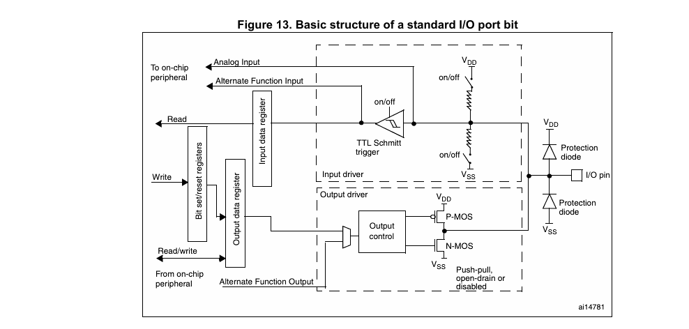
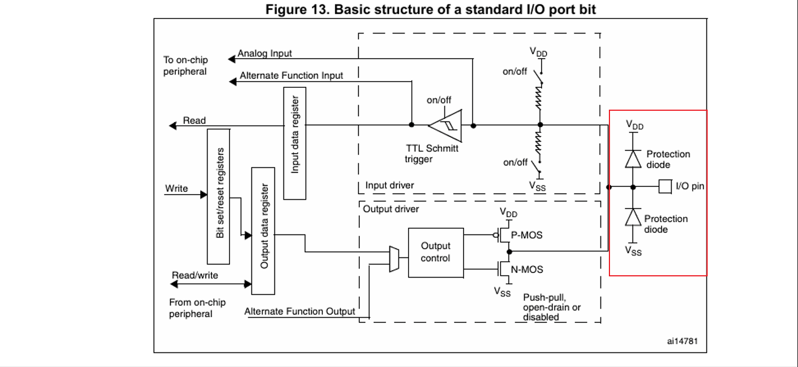
图中红色框选的部分是保护二极管部分，当输入高于3.3V时，上方二极管导通，此时电流不会进入工作区域，起到保护作用；当输入低于0V时，下方二极管导通，此时电流也不会进入工作区域，起到保护作用。
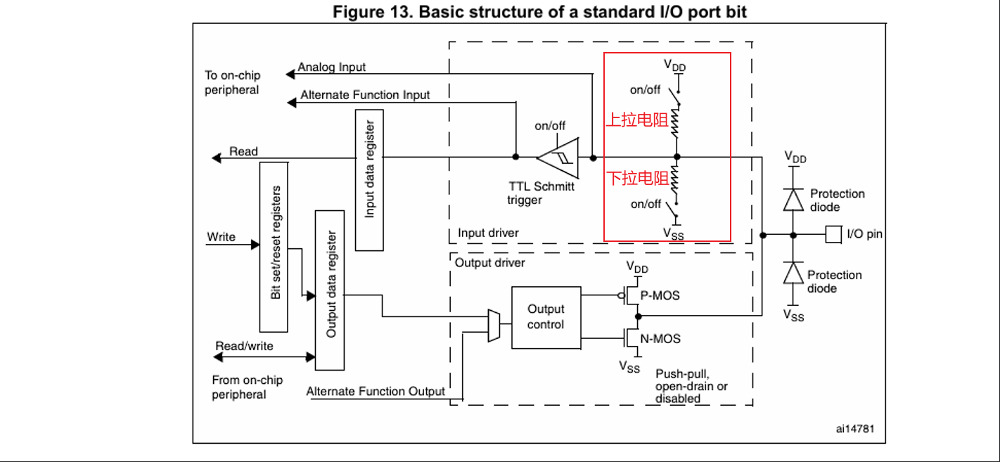
图中红色框选的部分是上/下拉电阻部分，上拉电阻和下拉电阻的开关均由寄存器控制。
上拉电阻和下拉电阻的作用是离开浮空态并保持稳定状态。
浮空态指的是外部无输入，即端口置空时，由于环境电磁干扰，导致输入电平时高时低，极其不稳定的状态。
上拉电阻连接引脚至电源正极以保持稳定的高电平状态；下拉电阻连接引脚至地以保持稳定的低电平状态。
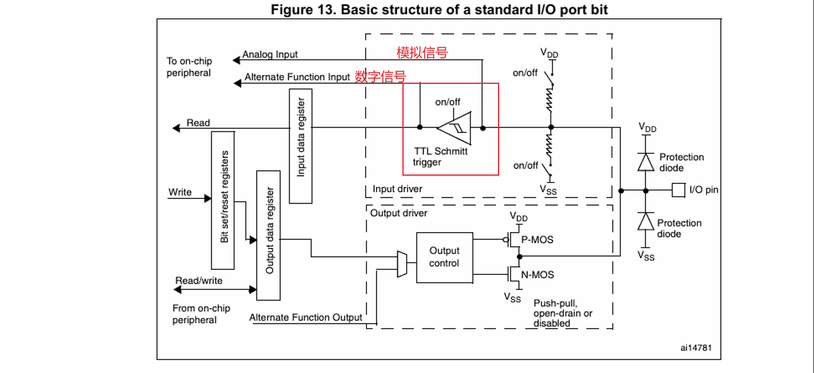
图中红色框选的部分是施密特触发器，作用是将模拟信号转化为数字信号。
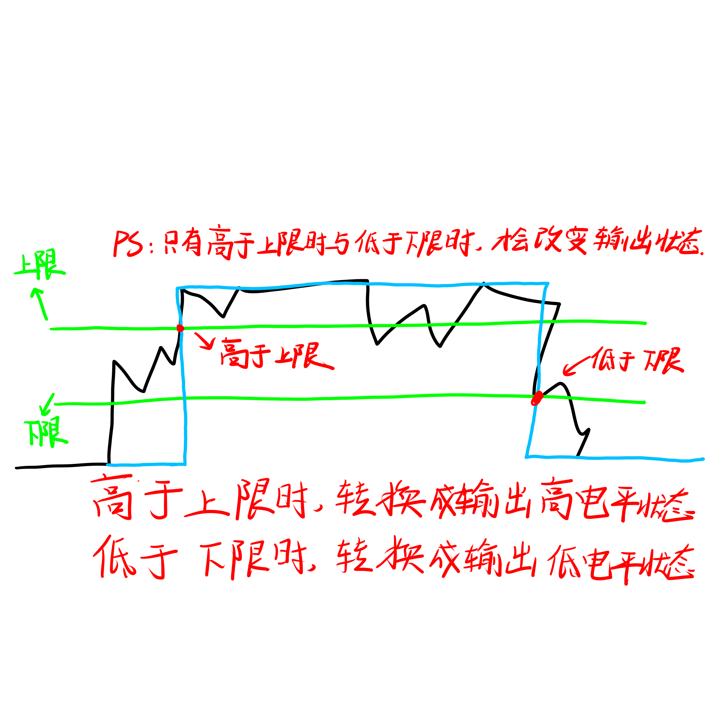
施密特触发器限制了有效高电平-有效低电平区域，即途中绿色的线。只要模拟值高于上限后，直到模拟值低于下限前，都保持输出高电平；当模拟值低于下限后，直到模拟值高于上限前，都保持输出低电平。
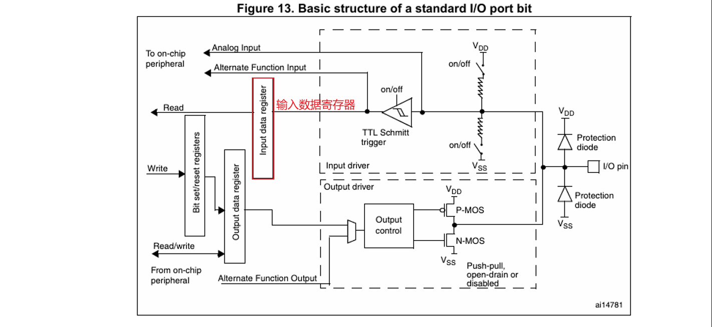
图中红色框选的部分是输入数据寄存器，存储经过施耐特触发器后的数字信号，由CPU读取寄存器中的信号。
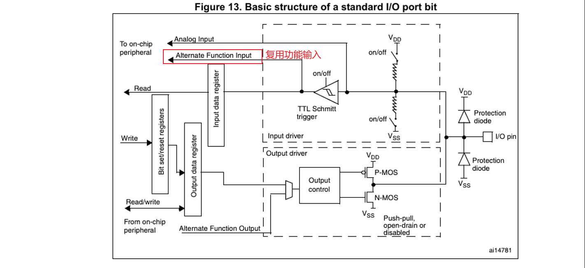
图中红色框选的部分是复用功能输入，如果这个引脚不用作普通GPIO，而是给串口或定时器当输入引脚，信号就会通过这里。
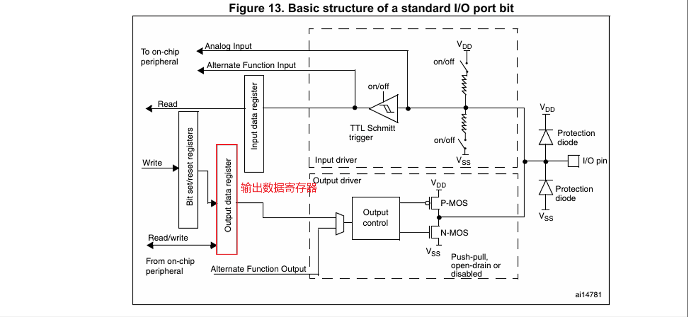
图中红色框选的部分是输出数据寄存器，使用代码控制引脚输出高低电平时，代码就存在这里。
代码控制引脚输出高低电平时，步骤如下：
- 读取寄存器所有位；
- 修改寄存器指定位；
- 将修改后的结果写入。
可见，修改需要对寄存器所有位进行操作，十分的繁琐。如果完成读取操作后，有一个高优先级的中断，在中断过程中进行了修改操作，等到中断结束后，又执行一遍修改和写入操作，这样一来，中断过程中执行的操作就白费劲了。
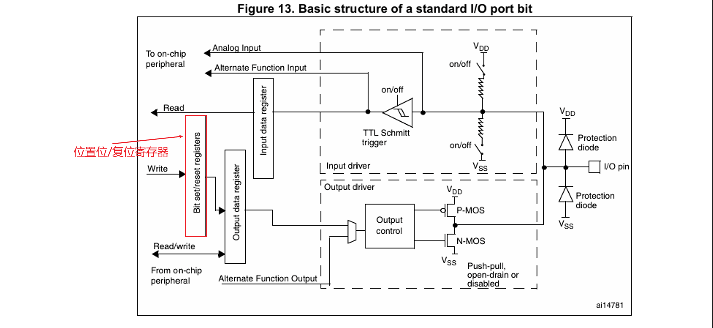
图中红色框选的部分是位置位/复位寄存器，该寄存器能够直接将某一位数据修改，不需要读取寄存器中的所有位。相比输出数据寄存器而言，更加快捷且不会出现中断问题。
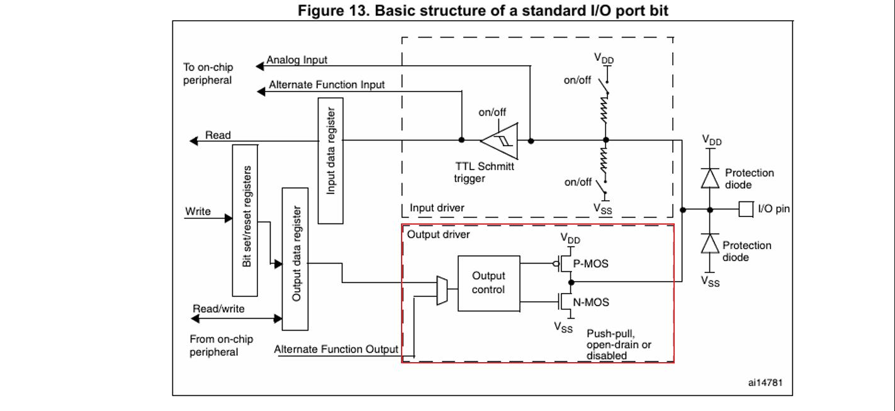
图中红色框选的部分输出驱动电路，用于将单片机微小的输出信号放大，到足够驱动外部电路的程度。
这部分由输出控制与P-MOS/N-MOS管组成。
关于MOS管，点击这里跳转补充：MOS管介绍
GPIO八种控制模式
| 模式名称 | 英文简称 | 内部电路状态（对照结构图） | 适用场景 |
|---|---|---|---|
| 浮空输入 | Floating | 上下拉开关全部 off，信号直接过施密特触发器到 IDR。 |
接收外部驱动能力强的数字信号（如标准传感器输出）。 |
| 上拉输入 | Pull-up | 上拉开关 on，下拉 off。默认读到 1。 |
接独立按键（按键另一端接地），或 I2C 总线空闲状态。 |
| 下拉输入 | Pull-down | 下拉开关 on，上拉 off。默认读到 0 |
接独立按键（按键另一端接高电平）。 |
| 模拟输入 | Analog | 施密特触发器和上下拉全 off，信号直接走最上面的 Analog IP [1] 路径。 |
ADC（模数转换器）采集电压信号，或者低功耗省电状态。 |
| 输出模式名称 | 英文名称与简称 | 内部 MOS 管工作状态 | 内部数据来源 | 输出能力与电平特点 | 典型应用场景 |
|---|---|---|---|---|---|
| 推挽输出 | Push-Pull OutputGPIO_MODE_OUTPUT_PP |
P-MOS 与 N-MOS 均工作 （互补导通：高电平时 P-MOS 开，低电平时 N-MOS 开） |
输出数据寄存器 (ODR) | • 直接强力输出高电平（3.3V）和低电平（0V） • 驱动能力强（可达 20mA） • 开关速度快 |
• 控制 LED 灯亮灭 • 驱动蜂鸣器、继电器 • 普通数字开关量输出 |
| 开漏输出 | Open-Drain OutputGPIO_MODE_OUTPUT_OD |
P-MOS 被强制关闭 只有 N-MOS 工作 |
输出数据寄存器 (ODR) | • 输出低电平时接地（0V） • 输出高电平时呈高阻态（悬空） • 需外接上拉电阻才能输出高电平，可实现“线与”和电平转换 |
• I2C 通信总线（SDA / SCL） • 3.3V 单片机与 5V 外设通信（电平匹配） |
| 复用推挽输出 | Alternate Function Push-PullGPIO_MODE_AF_PP |
P-MOS 与 N-MOS 均工作 （结构同推挽） |
片上外设硬件 （如 Timers, SPI, USART 等） |
• 输出特性与普通推挽一致 • 输出波形和电平由内部外设直接控制，不经过 ODR |
• PWM 波形输出（电机调速、LED 调光） • SPI 通信的时钟引脚（SCK） • 串口通信的发送引脚（TX） |
| 复用开漏输出 | Alternate Function Open-DrainGPIO_MODE_AF_OD |
P-MOS 被强制关闭 只有 N-MOS 工作 （结构同开漏） |
片上外设硬件 （如 I2C 模块） |
• 输出特性与普通开漏一致（高阻态+高/低驱动） • 控制权交由内部硬件外设，需外接上拉电阻 |
• 硬件 I2C 控制引脚 • 硬件 SMBus 总线引脚 |
补充：MOS管介绍
MOS管有三极，分别是栅极(G, Gate)，漏极(D, Drain)和源极(S, Source)。
- G(Gate, 栅极)作为控制端，通过给栅极施加不同的电压，能够控制MOS管导通和截止。
- D(Drain, 漏极)作为电流输入或者流出端。
- S(Source, 源极)作为电流源头端。
MOS管按载流子类型可分为N-MOS管和P-MOS管。
N-MOS管的载流子是电子；P-MOS管的载流子是空穴。
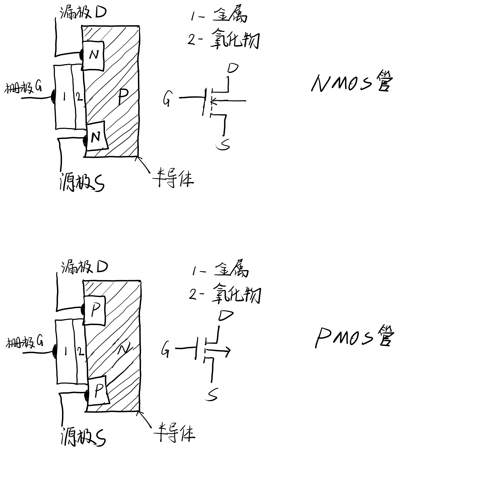
关于MOS管的工作原理，可见该视频MOS管工作原理-b站up爱上半导体。
我的理解就是MOS管依靠施加栅极电压控制沟道形成，相当于一个开关，开启时形成了沟道，回路导通；关闭时形成了两个PN结，其中一个PN结截止，另一个PN结导通，回路截止。
| 类型 | 导通条件 | 水龙头比喻 | 常见位置 |
|---|---|---|---|
| N-MOS | (G 极电压高于 S 极，达到门限电压) |
正向按压水龙头：用力按下去（给高电平），水流通。 | 常常接在电路的下半部分（接 GND） |
| P-MOS | (G 极电压低于 S 极) |
反向拉拔水龙头：往上拉（给低电平），水流通。 | 常常接在电路的上半部分（接 |
Analog指的是模拟量，此时输入的是未经过施密特触发器的模拟信号。 ↩︎